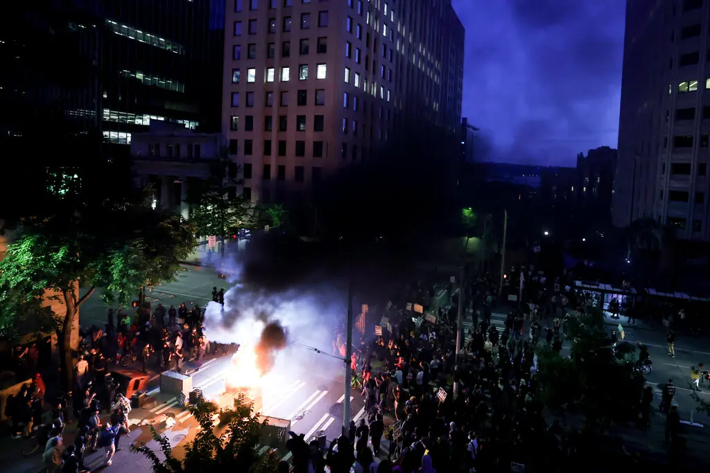

Conspiracy Charges for Protesters? The Landmark 2026 Trial Everyone is Watching

Table of Contents
- What Happened in Spokane on June 11, 2025
- Who Are the Three Defendants?
- The Conspiracy Charge: What It Means Legally
- The DOJ Prosecutor Who Resigned Rather Than Proceed
- The First Amendment Debate: What Legal Experts Are Saying
- What Happens Next and Why It Matters
- Frequently Asked Questions
- Conclusion
A federal courtroom in Spokane, Washington is about to become the most closely watched legal arena in the United States. Three activists — Bajun Mavalwalla II, Justice Forral, and Jac Archer — are standing trial on charges of conspiracy to impede or injure federal officers, stemming from their roles in organizing an immigration protest in June 2025. The charges carry a maximum sentence of six years in federal prison. But what makes this case extraordinary is not the sentence — it is what the prosecution's legal theory, if accepted by the court, would mean for every future protest in America.
Federal prosecutors are not alleging that these three individuals physically assaulted anyone, destroyed property, or committed any act of conventional violence. They are alleging that the activists organized a protest specifically intended to obstruct federal immigration officers — and that this organizational intent, backed by evidence of planning, social media coordination, and the use of physical barriers, constitutes a federal criminal conspiracy. Civil rights attorneys and legal scholars across the political spectrum are watching this case with alarm, because if the government's theory succeeds, it could fundamentally alter what constitutes protected political protest in the United States.
Key Takeaways
- Three Spokane activists — Bajun Mavalwalla II, Justice Forral, and Jac Archer — face federal conspiracy charges for their roles in organizing a June 2025 immigration protest.
- The charge — conspiracy to impede or injure federal officers — carries a maximum sentence of six years in federal prison.
- The prosecution is not alleging violence or property destruction — only that the defendants intentionally organized to obstruct ICE agents.
- All three defendants refused plea deals and are proceeding to trial, arguing the charges violate their First Amendment rights.
- Richard Barker, the acting U.S. attorney for the Eastern District of Washington, resigned rather than sign the indictment, citing concerns about using federal power to prosecute civil disobedience.
- Legal experts warn the case could set a precedent that criminalizes protest organizing even when no violence occurs.
What Happened in Spokane on June 11, 2025
On the morning of June 11, 2025, a group of demonstrators gathered outside the Henry M. Jackson Federal Building in Spokane, Washington. Their stated purpose was to prevent Immigration and Customs Enforcement (ICE) agents from transporting two Venezuelan immigrants who were being held inside the building to a processing center.
The protest was organized in advance. According to court documents, the defendants used social media to coordinate attendance and explicitly encouraged participants to risk arrest by physically blocking ICE exits. On the day of the protest, demonstrators linked arms to form human barricades across driveways and building exits. Sandbags were deployed as physical obstacles. The blockade was designed to make it physically impossible for federal vehicles to leave the building with the detainees.
Law enforcement responded with pepper balls and smoke grenades. By the end of the confrontation, more than 30 people had been arrested. The overwhelming majority faced standard misdemeanor charges — trespassing, failure to disperse, and similar offenses. But for Mavalwalla, Forral, and Archer, federal prosecutors decided that the standard playbook was insufficient. These three, identified as organizers rather than ordinary participants, would face something much more serious.
Also Read
More News Stories →Who Are the Three Defendants?
The three defendants are not career criminals or individuals with histories of violence. They are activists who were identified by federal investigators as having played central organizing roles in the June 2025 protest. Here is what is publicly known about each:
| Defendant | Role Alleged by Prosecutors | Plea Deal |
|---|---|---|
| Bajun Mavalwalla II | Identified as a primary organizer; alleged to have coordinated logistics | Refused |
| Justice Forral | Alleged to have used social media to mobilize participants and encourage physical obstruction | Refused |
| Jac Archer | Alleged to have participated in organizing the physical barriers at the building | Refused |
Critically, all three defendants refused plea deals offered by prosecutors. This decision — which exposes them to the full six-year maximum sentence — reflects their stated belief that the charges themselves are unconstitutional. Their attorneys have made clear that the defense strategy will center on the First Amendment: the argument that organizing a political protest, even one that physically obstructs government activity, is protected political speech and assembly under the United States Constitution.
The Conspiracy Charge: What It Means Legally
The specific charge — conspiracy to impede or injure federal officers — comes from 18 U.S.C. § 372, a statute that has rarely been applied to protest activity. The law makes it a federal felony for two or more persons to conspire to prevent, by force, intimidation, or threat, any federal officer from performing their official duties.
The prosecution's theory in the Spokane case stretches this statute in a new direction. The government is arguing that organizing a protest specifically designed to physically block ICE agents — even without any threat of bodily harm to those agents — qualifies as the kind of force or intimidation the statute prohibits. The use of sandbags, human chains, and coordinated social media recruitment, prosecutors argue, crosses the line from protected protest into criminal conspiracy.
Legal Warning
If the prosecution's legal theory is accepted by the court, it would mean that any protest organizer who plans an action specifically intended to physically obstruct federal personnel — even without violence — could potentially face federal felony conspiracy charges. Legal scholars say this would be a significant expansion of the statute's historic scope.
Defense attorneys counter that this theory, if accepted, would effectively criminalize the planning of any sufficiently disruptive political demonstration. Civil disobedience — the deliberate, nonviolent violation of laws or obstruction of government activity as a form of political protest — has a long and constitutionally recognized history in the United States. From the civil rights sit-ins of the 1960s to anti-war demonstrations, courts have generally distinguished between the crime of trespass or obstruction and the kind of organized violence the conspiracy statute was designed to address.
The DOJ Prosecutor Who Resigned Rather Than Proceed
Perhaps the most striking aspect of this case is what happened before the indictment was even filed. Richard Barker, who was serving as the acting U.S. attorney for the Eastern District of Washington at the time, was directed by the Department of Justice to pursue these conspiracy charges. He refused.
Barker chose to resign his position rather than sign off on the indictment. His stated objection was substantive and principled: he believed that using federal conspiracy statutes to prosecute civil disobedience was an inappropriate exercise of prosecutorial power — one that he was not willing to authorize. His successor subsequently approved the indictments, allowing the case to proceed.
Barker's resignation is legally significant for several reasons. First, it represents a direct challenge, from within the Justice Department itself, to the legal and ethical basis for the prosecution. Second, it is the kind of documented internal dissent that defense attorneys can point to when arguing that the decision to prosecute was politically motivated rather than legally grounded. Third, it raises broader questions about the independence of the U.S. attorney system from political direction in the current climate.
Context
The resignation of a sitting U.S. attorney over the decision to pursue specific charges is extremely unusual. The U.S. attorney system is designed to provide independent prosecutorial judgment at the district level. When a U.S. attorney resigns rather than authorize an indictment, it signals a fundamental disagreement about whether the prosecution is legally and ethically appropriate.
The First Amendment Debate: What Legal Experts Are Saying
The legal community has not been quiet about this case. Across the ideological spectrum — from conservative civil libertarians to progressive civil rights advocates — legal scholars and practitioners have raised serious concerns about the prosecution's theory.
The core First Amendment question is this: at what point does organized political protest, which inevitably involves some degree of disruption to normal activity, cross the line into criminal conduct? Courts have long held that the First Amendment protects not just speech itself, but the organization of protest activity, including activity designed to pressure or obstruct those whose policies the protesters oppose.
The government's position — that explicitly planning to physically block federal officers constitutes criminal conspiracy — would, if accepted, create a new legal threshold that organizers of any sufficiently confrontational protest would need to navigate. Protest movements that rely on physical blockades, sit-ins, or other forms of direct action that physically prevent government agents from performing their duties could find their organizers exposed to federal felony charges, regardless of whether any violence occurs.
Defense attorneys in this case argue that the distinction between "organizing a protest" and "conspiring to commit a federal crime" is the entire question — and that the prosecution is deliberately conflating the two in a way that the First Amendment does not permit. They point to the long history of American civil disobedience, including protests that physically blocked government operations, as evidence that the Constitution has never been understood to prohibit this kind of political activity simply because it is organized and deliberate.
What Happens Next and Why It Matters
The Spokane trial will proceed with all three defendants facing the full conspiracy charge. The key legal questions the jury — and potentially the appeals courts above them — will need to resolve include:
- Does the statute apply? Does organizing a physical blockade of federal agents constitute "force or intimidation" under 18 U.S.C. § 372, even without any threat of bodily harm?
- Is the First Amendment a defense? Can defendants argue that their organizing activity was constitutionally protected political speech and assembly, regardless of the physical obstruction it caused?
- What is the evidence of specific intent? Prosecutors must prove the defendants specifically intended to impede federal officers — not just to protest their activities.
- What is the precedent? Whatever the outcome, this case will be cited in future prosecutions of protest organizers. A conviction would embolden prosecutors nationwide to apply the same theory to other demonstrations. An acquittal would signal that the approach failed its first major legal test.
The stakes extend far beyond these three individuals. If the government succeeds in using conspiracy charges to prosecute protest organizers for the act of organizing — without any violence — it will create a new legal landscape in which anyone who coordinates a disruptive political demonstration faces potential federal felony exposure. Civil rights organizations, labor unions, environmental activists, anti-war groups, and political movements of all ideologies would need to reassess what kinds of protest activity are legally safe to organize.
Frequently Asked Questions
Q: What are the Spokane protesters charged with in 2026?
A: Three activists — Bajun Mavalwalla II, Justice Forral, and Jac Archer — face federal charges of conspiracy to impede or injure federal officers under 18 U.S.C. § 372. The charges stem from their alleged roles in organizing a June 2025 immigration protest in Spokane where demonstrators physically blocked ICE agents from transporting two Venezuelan immigrants.
Q: Why is the Spokane protesters conspiracy trial 2026 historically significant?
A: It marks the first major application of federal conspiracy statutes specifically targeting protest organizers — not for violence or property destruction, but for intentionally organizing an obstruction of federal officers. Legal experts say a conviction could set a precedent that criminalizes organized civil disobedience nationwide.
Q: What happened during the Spokane immigration protest on June 11, 2025?
A: Protesters formed human barricades, used sandbags, and blocked building exits to prevent ICE agents from transporting two Venezuelan immigrants. Law enforcement responded with pepper balls and smoke grenades, making over 30 arrests. Most faced misdemeanor charges — only the three identified organizers face federal felony conspiracy charges.
Q: Why did U.S. Attorney Richard Barker resign?
A: Barker resigned as acting U.S. attorney for the Eastern District of Washington rather than authorize the conspiracy indictment. He expressed serious concerns that using federal conspiracy statutes to prosecute civil disobedience was an inappropriate exercise of prosecutorial power. His successor subsequently approved the charges.
Q: What is the maximum penalty if the Spokane protesters are convicted?
A: All three defendants face up to six years in federal prison if convicted on the conspiracy charge.
Q: Did the Spokane protesters accept plea deals?
A: No. All three defendants refused plea deals offered by prosecutors, choosing to contest the charges at trial. Their defense is centered on the argument that the charges violate First Amendment protections for political protest and assembly.
Conclusion
The trial of Bajun Mavalwalla II, Justice Forral, and Jac Archer in Spokane, Washington is not just a criminal proceeding — it is a constitutional referendum. The question the court must answer is not merely whether these three individuals committed a crime. It is whether the act of deliberately organizing a protest to physically obstruct federal agents, without violence, falls within the historic protection the First Amendment has always provided to political dissent in the United States.
The fact that a sitting U.S. attorney resigned rather than sign the indictment tells you something important about how legally contested this theory is, even within the institutions of the federal government. The fact that all three defendants refused plea deals and chose to face a potential six-year sentence rather than accept reduced charges tells you something about how seriously they take the constitutional principle at stake.
Whatever verdict the Spokane jury returns, this case will reverberate through American law for years. If the government wins, protest organizers across the country will face a new and serious legal risk simply for doing what activists have done throughout American history: planning, coordinating, and executing acts of nonviolent civil disobedience designed to force the government to confront the human cost of its own policies. If the government loses, it will be a significant defeat for the administration's legal strategy — and a reaffirmation that the First Amendment still means what it has always meant.

Sarah Mitchell
Senior Editor
Experienced journalist and senior editor bringing accurate, well-researched stories on law, politics, and civil liberties. Follow for the latest updates and in-depth coverage of the stories that matter.
Leave a Comment